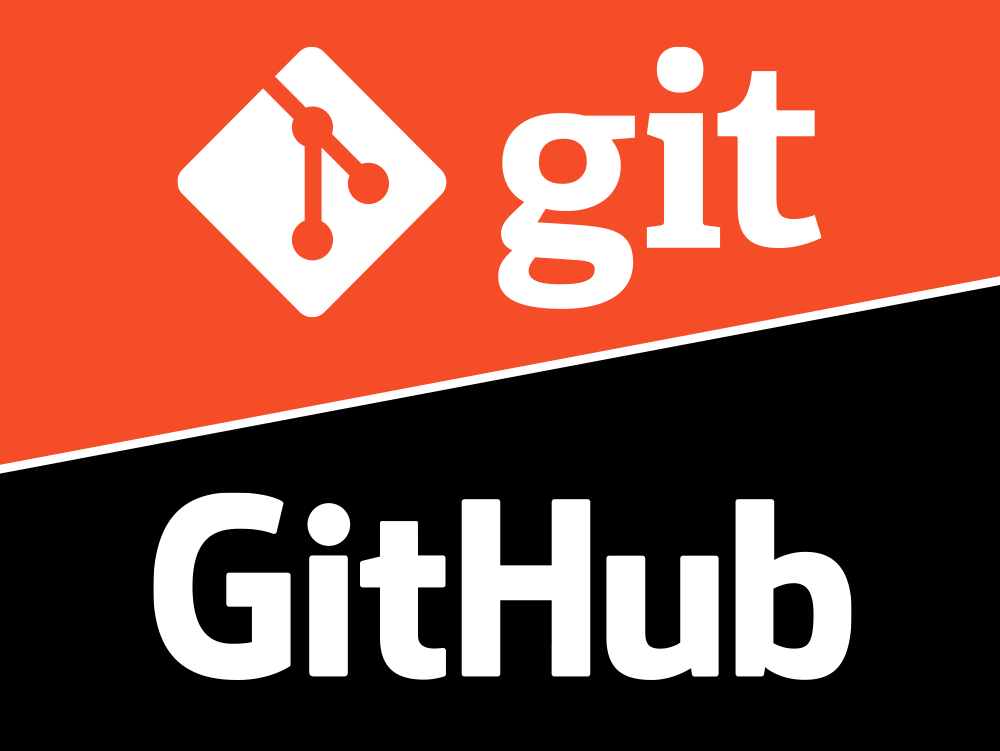

Comandos básicos do Git e GitHub
Configuração
git config --global user.name "Seu Nome"— Define seu nome.git config --global user.email "seu@email.com"— Define seu e-mail.git config --list— Exibe as configurações do Git.
Iniciando um projeto
git init— Inicializa um repositório Git.git clone URL— Clona um repositório existente.
Alterações e commits
git status— Mostra o estado dos arquivos.git add arquivo— Adiciona um arquivo à área de preparação.git add .— Adiciona todas as alterações.git commit -m "mensagem"— Cria um commit.git log— Exibe o histórico de commits.git diff— Mostra as diferenças entre as alterações.
Branches
git branch— Lista as branches.git branch nome-da-branch— Cria uma nova branch.git switch nome-da-branch— Muda para outra branch.git switch -c nome-da-branch— Cria e muda para uma nova branch.git merge nome-da-branch— Mescla uma branch com a atual.git branch -d nome-da-branch— Exclui uma branch local.
GitHub e repositórios remotos
git remote -v— Mostra os repositórios remotos configurados.git remote add origin URL— Adiciona um repositório remoto.git push origin main— Envia a branchmainpara o GitHub.git push -u origin main— Envia a branch e define o repositório remoto padrão.git pull— Baixa e integra alterações do repositório remoto.git fetch— Baixa informações do remoto sem integrar as alterações.
O que aprendi sobre Git e GitHub
Aprendi a configurar o Git, definindo meu nome e e-mail, além de criar e clonar repositórios para começar a trabalhar em projetos. Também aprendi a acompanhar as alterações dos arquivos usando comandos como git status, git add e git commit, que ajudam a organizar e registrar cada mudança realizada.
Aprendi também sobre as branches, que permitem desenvolver novas funcionalidades sem alterar diretamente o projeto principal. Com comandos como git branch, git switch e git merge, é possível criar, trocar e unir diferentes partes do projeto.
Por fim, aprendi a utilizar o Git junto com o GitHub, conectando o projeto local a um repositório remoto. Com comandos como git push, git pull e git fetch, consigo enviar minhas alterações para o GitHub e também atualizar meu projeto com alterações que estão no repositório remoto.